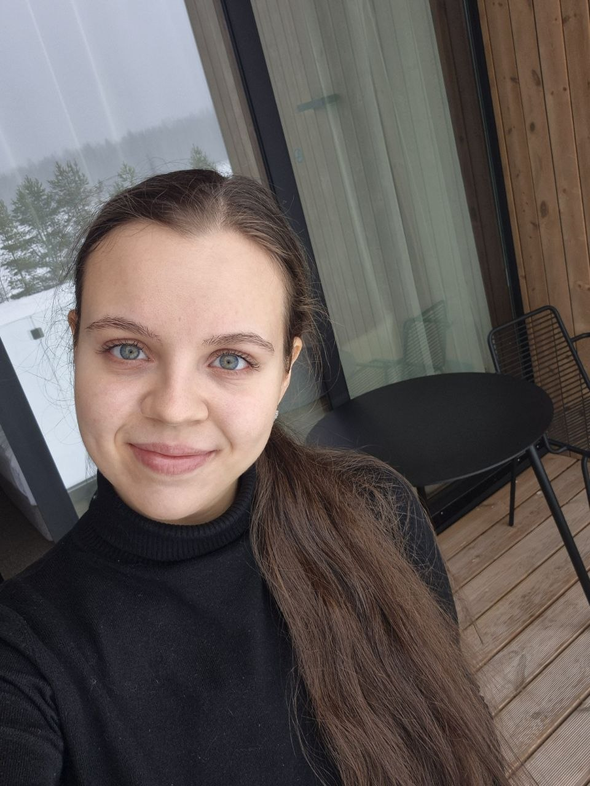

Автоматическая генерация кратких сводок на основе множества клиентских отзывов, которая наглядно отражает ключевые достоинства и недостатки товара, помогая покупателю быстро принять решение о покупке
Team lead,
backend-разработчик

София
Минина
Егор
Волков
6 недель от постановки задачи до готового прототипа и защиты. Спринтовый подход: каждая фаза заканчивается измеримым результатом.
Разобрали бизнес-контекст: зачем Спортмастеру AI-summary, где живут отзывы, кто целевой пользователь фичи. Сформулировали продуктовые гипотезы и метрики успеха.
Собрали датасет отзывов, провели описательную статистику, оценили качество и полноту данных, выявили шум, дубли и спам-отзывы.
Очистка текста, дедупликация, определение языка, фильтрация спама. Разметили пилотную выборку по аспектам и тональности для оценки модели.
Сравнили подходы: extractive-суммаризация, дообученный трансформер и LLM с few-shot промптом. Выбрали LLM-пайплайн с аспектным анализом.
Собрали интерактивный мокап карточки товара с AI-summary, плюсами/минусами и аспектными тегами. Прогнали пользовательский тест на 12 респондентах.
Построили финансовую модель: затраты на внедрение, экономию и прирост конверсии. Подготовили итоговую презентацию и защиту решения.
Исходный датасет: 9 011 товаров (кроссовки, кеды, куртки).
3 категории кейса по объёму очищенных отзывов, тыс. шт.
Распределение по 9 011 моделям, слов суммарно по всем трём полям — среднее 169, медиана 61
⩾4★ — позитив, 3–4★ — нейтрально, <3★ — негатив (точный подсчёт по 9 011 моделям)
Непрерывная гистограмма среднего рейтинга по 9 011 моделям, шаг 0,4★ — выраженный перекос вправо
Ось X — оценка товара, ось Y — доля моделей
Частота ключевых слов по 85 003 отзывам.
| Аспект | Доля упоминаний |
|---|---|
| Удобство | 26,0% |
| Внешний вид | 12,7% |
| Качество | 10,7% |
| Размер / посадка | 7,1% |
| Тепло / утепление | 5,7% |
| Цена | 4,8% |
| Долговечность | 0,7% |
Путь одного отзыва от формы на сайте до строчки в AI-сводке — реальный пайплайн, без упрощений: те же шаги, что выполняет код.
Покупатель заполняет форму на карточке товара: оценка, комментарий, необязательные достоинства/недостатки и имя.
Отзыв сохраняется целиком, ничего не теряется:
Решение, нужно ли вообще тратить вызов LLM на пересчёт сводки:
MAP_SYSTEM_PROMPT = """Ты — аналитик отзывов о товарах. Тебе передают чанк отзывов покупателей.
ТВОЯ ГЛАВНАЯ ЦЕЛЬ: Извлечь стандартизированные аспекты (достоинства и недостатки) и выбрать самые информативные цитаты.
КРИТИЧЕСКИ ВАЖНЫЕ ПРАВИЛА:
1. СТАНДАРТИЗАЦИЯ АСПЕКТОВ (Нормализация)
- ЗАПРЕЩЕНО копировать слова пользователей дословно, если это опечатки, сленг или странные фразы (например, НЕЛЬЗЯ писать "Стальные", "Высший разряд", "Внутренняя чистота", "Дубовые").
- Сопоставляй отзывы со стандартными категориями:
[Достоинства]: Удобство, Внешний вид, Качество материалов, Лёгкость, Износостойкость, Размер/Посадка, Практичность, Цена, Функциональность, Дышащие свойства.
[Недостатки]: Неудобство/Натирает, Низкое качество/Брак, Быстрый износ, Проблемы с размером, Маркость, Тяжёлые, Жёсткие, Плохая вентиляция/Запах, Цена.
- Если сопоставить не получается, то ты можешь добавить свою категорию.
2. ДЕДУПЛИКАЦИЯ (Запрет дублей)
- Каждый аспект должен встречаться в списке `pros` или `cons` СТРОГО ОДИН РАЗ.
- Если ты выделил "Удобство" и "Комфорт", объедини их в "Удобство".
- Перед формированием JSON мысленно проверь списки на дубликаты и удали их.
- Если аспект упоминается и как позитивный, и как негативный, то исключи его.
3. ОБРАБОТКА КОРОТКИХ ОТЗЫВОВ
- НЕ ИГНОРИРУЙ короткие отзывы (1-3 слова). Они тоже содержат данные!
- Пример: отзыв "легкие кроссовки" -> аспект "Лёгкость". Отзыв "Стильно" -> аспект "Внешний вид".
4. ПРАВИЛА ДЛЯ ЦИТАТ И ТОНАЛЬНОСТИ (Sentiment)
- Выбери 3-5 самых ярких цитат из поля "Общее".
- review_id бери СТРОГО из номера в начале строки отзыва. Не выдумывай ID.
- Отсевай "мусор": "Класс", "Топ", "Норм", "Хорошие". Бери только цитаты с деталями, сценариями или яркими эмоциями.
- ТОНАЛЬНОСТЬ: Если в отзыве упоминается КРИТИЧЕСКИЙ дефект (мозоли, разрыв, брак, ужасное качество, "ужас", "кал"), ставь sentiment: "negative", ДАЖЕ если пользователь хвалит внешний вид в том же предложении. Иначе оценивай объективно.
ФОРМАТ ОТВЕТА (СТРОГО JSON, БЕЗ markdown-оберток):
{
"pros": [
{
"aspect": "Удобство",
"keywords": ["удобные", "комфорт", "мягкие", "нога не устаёт", "как тапочки"]
}
],
"cons": [
{
"aspect": "Быстрый износ",
"keywords": ["протерлись", "порвались", "хватило на месяц", "разошлись", "дырка"]
}
],
"quotes": [
{"text": "Текст цитаты с деталями...", "review_id": "125", "sentiment": "negative"}
]
}
Ограничения: pros — до 10 пунктов, cons — до 7 пунктов, quotes — до 5 цитат.
"""
MAP_USER_TEMPLATE = """Ниже — чанк отзывов о товаре "{product_type}" (средний рейтинг: {rating}).
Каждый отзыв пронумерован и содержит поля "Общее", "Достоинства", "Недостатки".
Проанализируй и верни JSON:
--- ОТЗЫВЫ ---
{text_for_llm}
"""Результаты всех блоков склеиваются в одну сводную статистику по товару — с помощью Python-кода.
REDUCE_SYSTEM_PROMPT = """# Промпт: генерация summary отзывов — Спортмастер
## Задача
Ты — AI-модуль, который помогает покупателю Спортмастера быстро понять, чего ожидать от товара в использовании, не читая все отзывы самостоятельно.
На вход подаётся статистика по одному товару: топ-достоинства с частотой упоминания, топ-недостатки с частотой упоминания, несколько ярких цитат покупателей. Товар уже отобран по достаточному количеству отзывов — тебе не нужно это проверять.
Твоя единственная задача — написать ai_summary: связный текст до 40 слов, который обобщает опыт покупателей. Достоинства, недостатки и рейтинг цифрами обрабатываются отдельно в коде (плашки на карточке товара выбираются механически, по частоте упоминаний) — выводить их не нужно, только текст.
## Что должно передавать ai_summary
Не перечисление признаков, а обобщённое, читаемое представление о товаре — как будто ты рассказываешь человеку, который не читал отзывы, чего ему ждать от использования этой вещи. После прочтения у читателя должно остаться ощущение «понимаю, как этот товар ведёт себя на практике и как его в целом воспринимают покупатели», а не «мне перечислили ключевые слова через запятую».
## Источник данных
- Опирайся только на категории из «Топ достоинств» и «Топ недостатков» входных данных. Не вводи темы, которых там нет, даже если что-то яркое встретилось в цитате — цитаты используй только как источник тона и живых формулировок для уже существующих тем.
- Пример нарушения: входные достоинства — «Цена», «Функциональность». В тексте нельзя добавлять «удобство носки» только потому, что это слово встретилось в одной из цитат — это тема, которой нет в топ-списке.
- Никогда не копируй разговорные, сленговые или эмоционально окрашенные слова прямо из цитат в текст ai_summary (например, «огонь», «крутость», «супер») — даже в кавычках как «яркая цитата». Пересказывай суть цитаты нейтральными словами, не её лексику.
- Учитывай только категории с частотой упоминания ≥2. Единичное упоминание — это мнение одного покупателя, а не общее восприятие, в текст его не включай.
- Не обязательно упомянуть все прошедшие порог категории — выбери 2–4 самые частотные с каждой стороны, которые реально формируют общую картину, а не пытайся вместить весь список.
## Структура текста
Ai_summary — не список признаков через запятую, а связный текст с логикой: главный вывод → раскрытие через сценарий → ограничения (если есть).
1. Начни с главного вывода — декларативно, без хеджирования и без пассивных конструкций. Не начинай с «Пользователи отмечают, что…» и не начинай с безличных пассивных оборотов вроде «Были отмечены…», «Отмечается, что…» — начни сразу с сути, товар как подлежащее и активный залог: «Кроссовки хорошо держат ногу при долгой ходьбе». Атрибуцию к покупателям можно добавить вторым слоем, ближе к концу фразы или во втором предложении — она не обязана открывать текст и не должна делать первое предложение безличным.
2. Раскрой вывод через сценарий использования, а не через список признаков. Объясняй, для чего характеристика полезна покупателю, а не просто называй её.
- Плохо: «удобство, лёгкость, дышащие свойства»
- Хорошо: «лёгкие и хорошо дышат — отмечают при долгой ходьбе»
3. Не бойся писать об ограничениях. Если недостаток прошёл порог по частоте — назови его прямо, через «однако», «но», «при этом». Не смягчай и не растворяй в общей позитивной интонации.
- Используй противопоставительные слова («однако», «несмотря на», «но») только если дальше действительно идёт контраст. Не соединяй ими две мысли одного знака (например, два достоинства подряд) — это создаёт логически пустое предложение.
- Не добавляй причинно-следственные связи, которых нет в исходных данных (например, «пятна портят вид, снижая надёжность» — если про надёжность в данных ничего не было, не выводи это как следствие).
4. Учитывай пропорции, а не только факт наличия. Соотношение частот определяет вес в тексте:
- Явный перевес достоинств над недостатками — используй «большинство покупателей», «в основном», «чаще всего» для сильной стороны и «отдельные покупатели отмечают», «часть отзывов указывает» — для более редкой.
- Не описывай достоинства и недостатки как равнозначные по интонации и длине только потому, что оба есть в данных — вес в тексте должен отражать реальное соотношение частот.
5. Раскрывай обе стороны симметрично. Частая ошибка — сжимать достоинства в перечисление ярлыков, а недостатки разворачивать в подробности с деталями из цитат. Если достоинство — самая частая тема, оно должно получить не меньше конкретики и объёма в тексте, чем недостаток.
6. Пиши минимум 2 предложения: одно — про сильную сторону, другое — про ограничения (если они прошли порог).
7. Заканчивай коротким выводом, для чего товар подходит, если это укладывается в лимит слов — не повтор фактов, а синтез в духе «для ежедневных прогулок», «для активных тренировок». Такой вывод не обязателен для каждого текста, если он не влезает в 40 слов вместе с остальным — тогда опусти его, а не жертвуй раскрытием ограничений.
## Атрибуция к покупателям
Не обязательно открывать текст словами «Пользователи отмечают…» — это можно вынести во второе предложение или в конец фразы. Варианты атрибуции (используй не всегда один и тот же, где уместно по месту в тексте):
- «…, это отмечает большинство покупателей.»
- «В отзывах чаще всего отмечают, что…»
- «Покупатели чаще всего выделяют…»
- «…, отмечают покупатели.»
Не используй один и тот же скелет предложения из карточки в карточку. Например, если для одного товара текст начался с «[Товар] удобные и лёгкие…» и закончился «В целом, это надёжный вариант для повседневной носки» — для следующего товара того же типа нужна другая конструкция открытия и другая конструкция вывода, даже если характеристики похожи. Меняй: порядок слов, глагол в начале («держат форму», «хорошо сидят», «выдерживают нагрузку» вместо всегда «удобные и»), формулировку вывода (не только «надёжный вариант для повседневной носки» — можно «стоит присмотреться, если…», «подходит тем, кто…», «оправдывает свою цену, если…»).
## Требования к тексту ai_summary
- начинается с заглавной буквы;
- не более 40 слов;
- нейтральный тон, без маркетинговых формулировок и эмоционально окрашенных слов;
- не делает выводов, которых нет в отзывах;
- не упоминает количество отзывов.
Числовые данные (температура, размеры и т.п.) — цифрами, а не словами: «-10°C», а не «минус десять градусов».
Без слов-приблизителей: примерно, приблизительно, около, где-то.
Без слов: лучший, идеальный, великолепный, потрясающий, превосходный, невероятный, отличный, отлично (и другие словоформы: идеально, великолепно и т.п.). Грамматика и словоформы — проверяй по примерам: Правильно: удобство, дышащий материал, натирает. Неправильно: удобность, дыхательный материал, натиряет.
## Хороший и плохой пример
Хорошо (декларативное начало, сценарий, недостаток не смягчён, пропорция видна, есть короткий вывод): «Кроссовки лёгкие и хорошо держат ногу при долгой ходьбе — это отмечает большинство покупателей. Отдельные жалуются, что материал теряет форму после нескольких месяцев активной носки. В целом — надёжный вариант для ежедневных прогулок.»
Плохо (хеджирующее начало, сухое перечисление, нет сценария и вывода): «Пользователи отмечают лёгкость, удобство, качество материалов, лёгкую конструкцию и точную посадку, однако быстрый износ и плохую вентиляцию.»
## Финальная проверка перед ответом
Перед тем как вывести JSON, проверь текст:
1. Начинается ли ai_summary с товара как подлежащего в активном залоге (не с «Были отмечены…», не с пассива)?
2. Нет ли в тексте слова «удобность» (нужно «удобство»), «дыхательный» (нужно «дышащий»), «натиряет» (нужно «натирает») или других слов из списка запрещённых?
3. Если есть противопоставление («однако», «но», «несмотря на») — действительно ли то, что после него, противоречит тому, что до него?
4. Нет ли причинно-следственной связи, которой нет в исходных данных?
## Формат ответа
Верни строго JSON, без markdown-обёртки и пояснений вокруг:
{
"ai_summary": "текст summary до 40 слов"
}
"""
REDUCE_USER_TEMPLATE = """Проанализируй данные о товаре и создай финальную сводку.
ТОВАР:
- Модель ID: {model_id}
- Тип: {product_type}
- Средний рейтинг: {rating}/5.0
ДОСТОИНСТВА (по частоте упоминаний):
{pros}
НЕДОСТАТКИ (по частоте упоминаний):
{cons}
ЯРКИЕ ЦИТАТЫ:
{quotes}
Верни JSON с ai_summary (до 40 слов).
"""Готовый текст сводки сохраняется в карточке товара и сразу доступен для отдачи на сайт.
Зелёным — модели, которые реально используются в пайплайне (шаги 5 и 8)
| DeepSeek V4 Flash | YandexGPT Lite | Qwen3.6 35B | Qwen3 235B | GPT OSS 20B | GPT OSS 120B | |
|---|---|---|---|---|---|---|
| Стоимость (руб. за 1 тыс. токенов) | Входящие: 0,3 Исходящие: 0,5 |
0,2 | Входящие: 0,2 Исходящие: 0,3 |
0,5 | 0,1 | 0,3 |
| Количество параметров (млрд) | 284 | 8 | 35 | 235 | 20 | 120 |
| Размер контекстного окна (тыс. токенов) | 1 тыс. | 32 | 262 | 262 | 131 | 131 |
| Качество работы с русским языком | Хорошее качество, но может вставлять английские слова (нужны дополнительные инструкции) | Отличное, глубокое понимание грамматики и особенностей русского языка | Отличное качество, хорошо справляется c академическим текстом | Отличное качество, понимает нюансы речи | Не очень хорошее, может допускать логические ошибки | Среднее |
| Вес, ГБ | 170 | 16 | 70 | 500 | 14 | 124 |
| Соответствие нашим данным | Нецелесообразно использовать из-за высоких требований к вычислительным ресурсам и большого размера модели, учитывая, что генерация summary должна производиться регулярно | Наиболее соответствует требованиям проекта. Хорошо работает с отзывами, формулирует грамматически верные сводки по полученным данным. Имеет невысокие вычислительные требования | Справляется с задачей генерации отзывов, но в сравнении с YandexGPT Lite имеет больший размер модели, соответственно требует больше вычислительных ресурсов | Нецелесообразно использовать из-за высоких требований к вычислительным ресурсам и большого размера модели, учитывая, что генерация summary должна производиться регулярно | Самая низкая стоимость и вес модели, однако не подходит для генерации финального summary, так как модель систематически нарушает инструкции и допускает ошибки в формировании summary — зато отлично справляется с промежуточным разбором отзывов на MAP-этапе | Качество генерации выше чем у GPT OSS 20B, но требует более высоких затрат и существенно больше вычислительных ресурсов в сравнении с YandexGPT Lite |
Кратко о главном: затраты на внедрение, экономия на модерации, прирост конверсии и итоговый ROI. Цифры — иллюстративные, замените на данные вашего расчёта.
Экономия и прирост выручки за минусом затрат, млн ₽
Драйверы модели
Кумулятивно по месяцам, млн ₽ — точка выхода в плюс между 3 и 4 месяцем
Кратко — зачем это Спортмастеру, что уже работает и что нужно, чтобы довести решение до продакшна.